PripravljenPrilepite sliko (Ctrl+V, povleci datoteko ali gumb »Izberi datoteko« v plošči Slika), izmerite ali vpišite mere in pritisnite Generiraj.
Izberite vsebino in format risbe — priloge se izvozijo v svojih nativnih formatih (CSV/TXT/JSON).
Merilo, revizija in naslovni blok se vzamejo iz sklopa »List in opombe«.
Projekti v brskalniku (lokalno, brez fotografije — kvota ~5 MB; umeritev, trasa in skica ostanejo). Za polni projekt s sliko uporabite »Shrani projekt« (datoteka).
Izberite primer — naloži polja, mere in nastavitve ter generira risbo.
Za pokončne ograje imamo na voljo 4 različne profile WoodCore desk: profil POLNA DESKA 57/32, POLNA DESKA 100, POLNA DESKA 128 in ROMB DESKA 67. Spodaj so prikazani štirje primeri pokončne ograje z različnimi profili desk — kliknite kartico za nalaganje profila.
Minimalen odmik vijaka od roba reza je 3 cm. Pri konstrukciji, montirani na ploščo (balkon, dvoriščna ograja), je maksimalen odmik vijaka od roba reza 15 cm; pri konstrukciji, montirani bočno na ploščo (balkon), pa 10 cm.
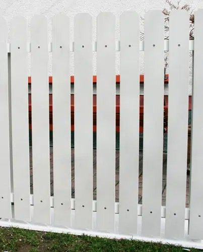
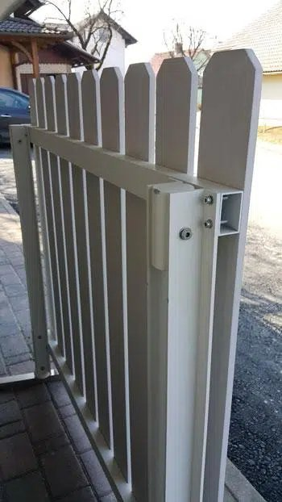
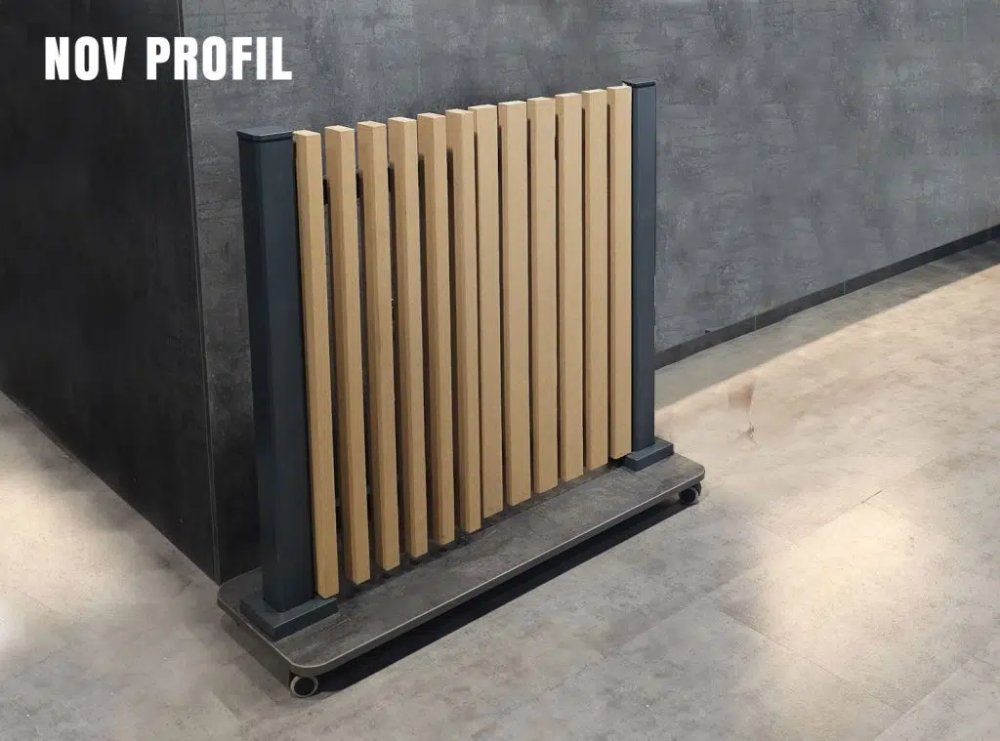
POLNA DESKA 57/32WPC polna deska širine 5,7 cm ali 3,2 cm — dimenzija 57 × 32 × 5800 mm; naleganje je lahko na 57 ali 32 mm stran.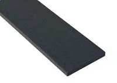
POLNA DESKA 100WPC polna deska za ograjo — dimenzija 100 × 12 × 5800 mm; namenjena samo za pokončno ograjo.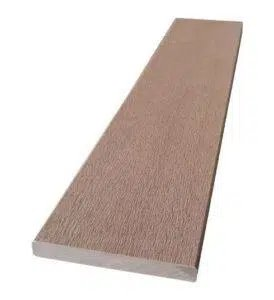
POLNA DESKA 128WPC polna deska za ograjo — dimenzija 128 × 16,5 × 2200 mm; za pokončno ali prečno ograjo.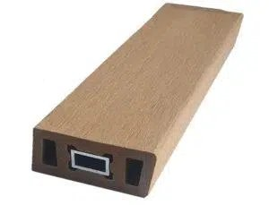
ROMB DESKA 67WPC deska za fasado ali ograjo, profil romb Z ALU CEVJO v sredini romba — dimenzija 67 × 26 × 5800 mm.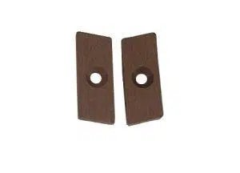
WPC čep za profil rombLevi in desni čep za zaključek romb profila na koncu; za zaključevanje prečne romb ograje je na voljo tudi letev.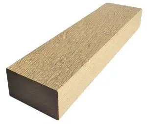
Ročaj za ograjoDimenzija 95 × 45 × 5800 mm; na zalogi samo še v WHITE odtenku — ostali odtenki so na voljo v polnem profilu.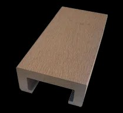
Ročaj za ograjo – poln profilDimenzija 92 × 45 × 5800 mm, notranja dimenzija 55 × 30 mm; samostojna prodaja ročajev ni možna.Za prečne pregradne stene so na voljo 3 profili WoodCore desk: ROMB DESKA-67, POLNA DESKA-128 in DESKA-150 (terasna deska).
Za pokončne pregradne stene je na voljo 5 profilov. Vodoravne cevi: 80 cm (POLNA-100), 100 cm (POLNA-128), 110 cm (ROMB, s kotnikom), pri KUBO odvisno od notranje alu cevi.
Vrtno pohištvo sčasoma izgubi prvotni videz in ga je treba na nekaj let ponovno barvati ali zaščititi. WoodCore WPC (bambusova vlakna + HDPE) ohranja enoten videz in ne potrebuje lakiranja ali barvanja — z 15-letno garancijo. Klopi in mize izdelamo tudi po željah in merah naročnika.
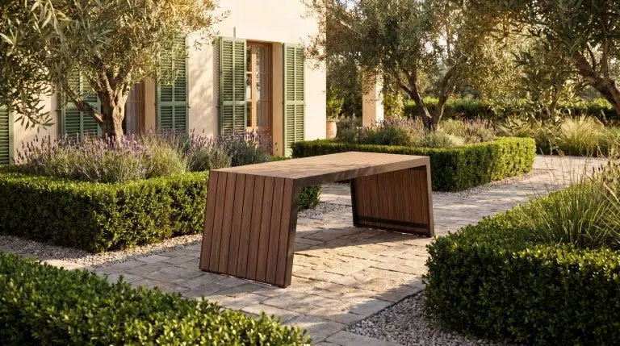
Miza KuboDimenzija 220 × 80 × 75 cm. Aluminijasta konstrukcija prašno barvana črno RAL 9005 in WPC deske KUBO 80×42 mm. Barvo desk izbere naročnik.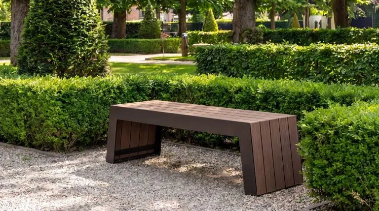
Klop KuboDimenzija 200 × 45 × 45 cm. Aluminijasta konstrukcija prašno barvana črno RAL 9005 in WPC deske KUBO 80×42 mm. Barvo desk izbere naročnik.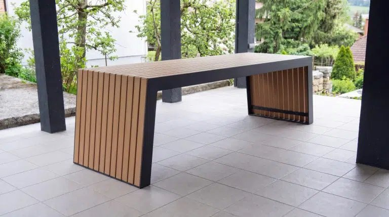
Miza LineaDimenzija 220 × 81 × 45 cm. Aluminijasta konstrukcija prašno barvana črno RAL 9005 in WPC deske polni profil 57×32. Barvo desk izbere naročnik.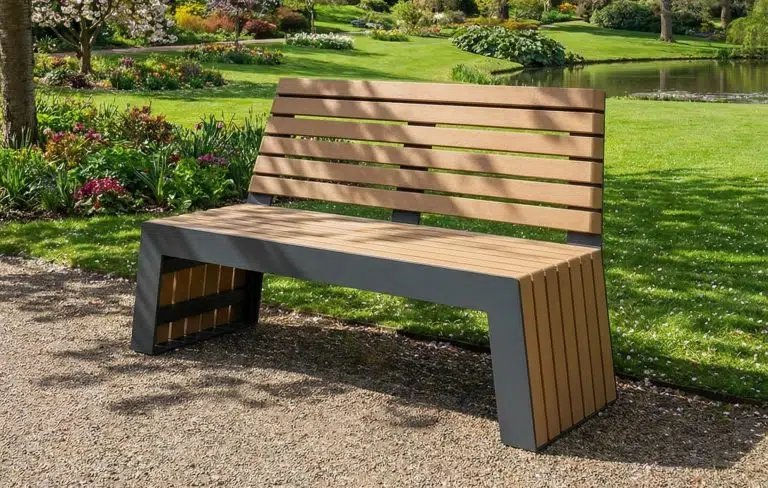
Klop LineaDimenzija 200 × 41 × 45 cm. Aluminijasta konstrukcija prašno barvana črno RAL 9005 in WPC deske polni profil 57×32. Na voljo klop z naslonom ali brez naslona. Barvo desk izbere naročnik.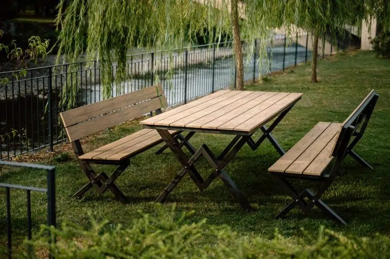
Klop in miza XJeklena konstrukcija z nogami v obliki črke X ter WPC polne deske profila 128. Miza 216 × 91,2 × 76,1 cm; klop z naslonom 216 × 39,2 × 44,8 cm. Nakup posamično ali kot komplet. Barvo desk izbere naročnik.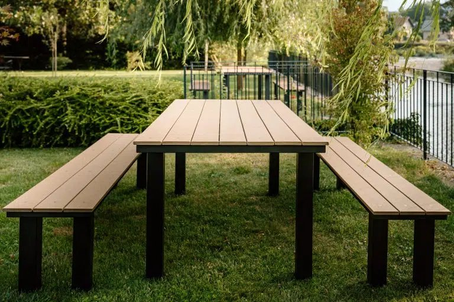
Klop in miza RJeklena konstrukcija z ravnimi nogami ter WPC polne deske profila 128. Miza 216 × 91,2 × 76,1 cm; klop 216 × 39,2 × 44,8 cm. Nakup posamično ali kot komplet. Barvo desk izbere naročnik.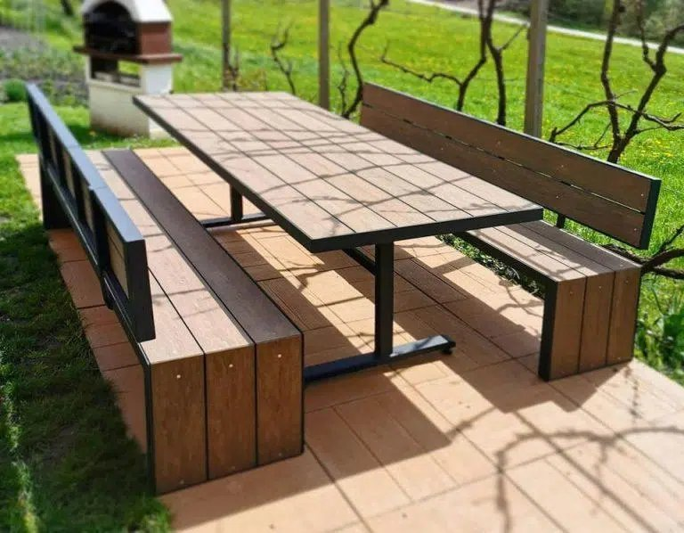
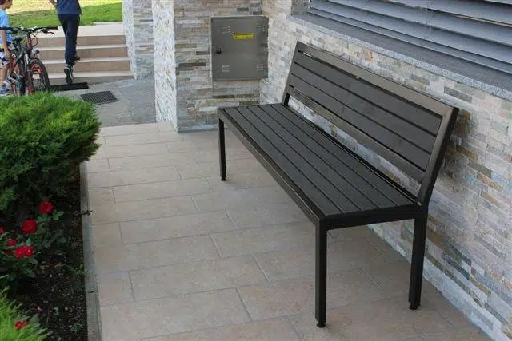
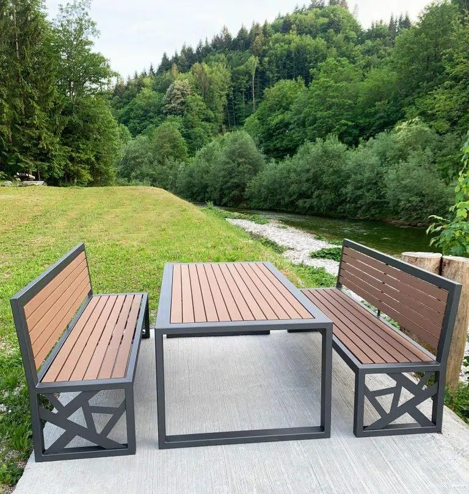
WPC deske ne potrebujejo barvanja ali lakiranja, priporočljivo pa je redno čiščenje površine z vodo. Pri mizah, klopeh in drugih WPC površinah pod nadstreškom ali tam, kjer jih dež ne more redno spirati, je zaradi maščob, madežev in umazanije čiščenje zahtevnejše. Za take površine priporočamo WEPOS WPC impregnacijo — ustvari dodatno vodoodbojno zaščito, zmanjša prodiranje tekočin in umazanije v površino ter olajša nadaljnje čiščenje in vzdrževanje. Pred nanosom mora biti WPC površina dobro očiščena in popolnoma suha. Impregnacijo priporočamo predvsem za mizne plošče, sedežne površine klopi in druge bolj obremenjene dele vrtnega pohištva.
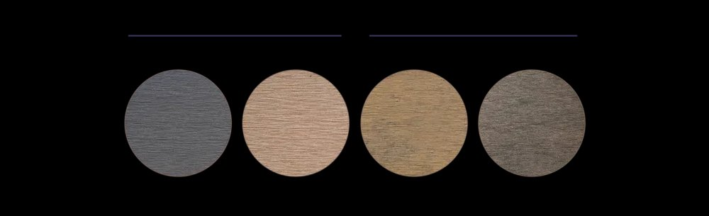
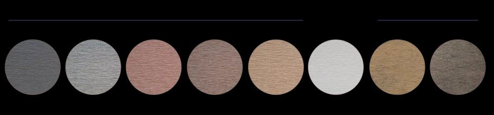
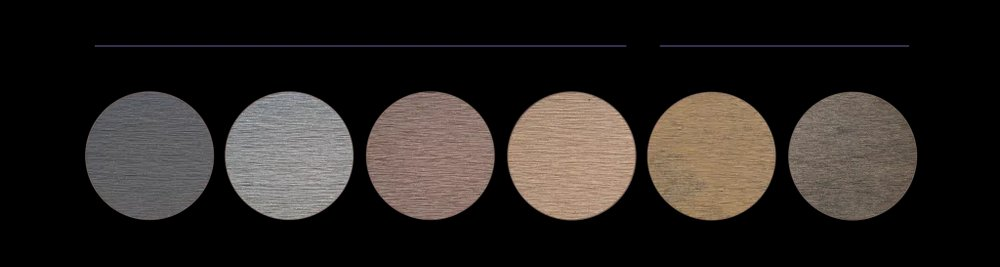
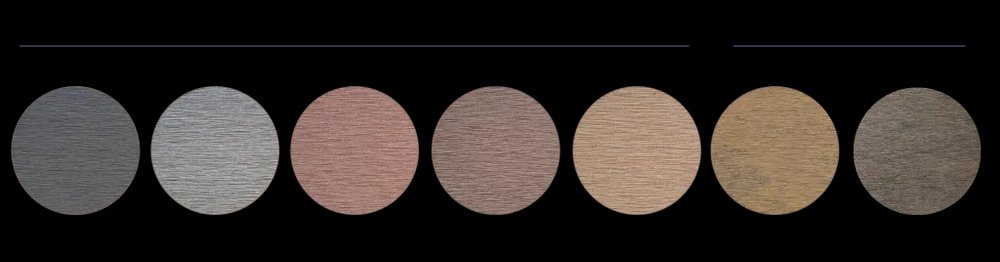
* Zaradi dodajanja naravnega materiala med barvanjem lahko barvni odtenki med posameznimi dobavami malenkost varirajo. ** Pri odtenkih Rustic Oak in Rustic Walnut (večbarvni videz) se odtenek in razpored lis med deskami in serijami opazneje razlikujeta.
OPOZORILO: WoodCore deske niso konstrukcijski element — ne smejo se uporabljati za nosilce, tramove, podporne stebre ali druge gradbene elemente. Neupoštevanje navodil lahko izniči garancijo.
WoodCore WPC deske je pred montažo potrebno hraniti v suhem in zračnem prostoru. Podlaga za shranjevanje naj bo ravna in čista. Deske naj bodo na odlagalni podlagi po celotni dolžini in širini. V primeru neustreznega skladiščenja se reklamacija ne upošteva.
Za brezplačno ponudbo nam sporočite dolžino in višino ograje, tip ograje (profil polna, profil terasna ali profil romb) ter želeni razmak. Pošljite povpraševanje na info@roksal.com; če je mogoče, priložite tudi tloris in slike.
Povlecite po modelu za vrtenje; gumbi za hitre kote. Model iz trenutnih mer (lamele, stebri, profili, korita).
Štirje koraki od fotografije do tehnične risbe. Kliknite gumb v koraku, da skočite na pravo mesto.
Odprite ploščo Slika (meni Plošča → 1). Sliko vstavite na enega od načinov:
Program mora vedeti, koliko mm predstavlja piksel. Kliknite 2 točki na znani dolžini na sliki (npr. mera 1000 mm) in vnesite njeno dolžino. Pri perspektivi uporabite 4 točke (vogali ograje).
Kliknite Zaznaj lamele s slike — program prepozna lamele in izpolni mere (št. lamel, višino, širino, režo). Rezultat vedno preverite.
Pritisnite Generiraj risbo (Ctrl+G). Za izvoz (PDF/SVG/DXF/STEP, kosovnica…) uporabite Meni → Izvozi (Ctrl+E).
S to potrditvijo sprejemate tehnično rešitev, kot je prikazana na risbi.
Shranjene različice parametrov — uporabi, izbriši ali izvozi kot dizajn tabelo (CSV).
Posnetki stanja projekta (avtoshranjevanje) — obnovi poljubno različico ali izvozi arhiv (JSON).
Zapiski izdaj Draftwright — združljivost shranjenih projektov je ohranjena.
Vodeni scenariji + kviz za oznako »Draftwright Certified Installer«.